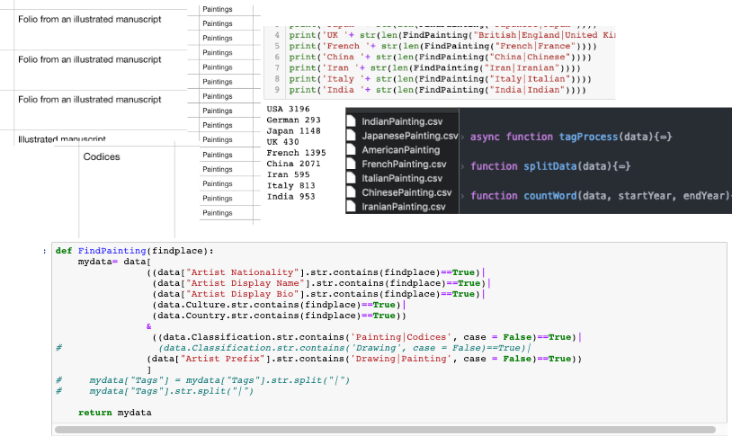
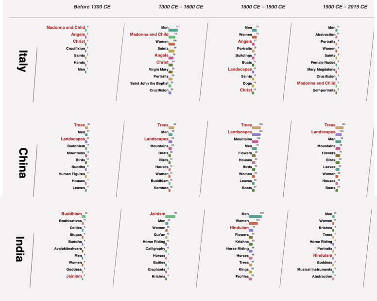

A data visualization by Dan Ran
An insight of Metropolitan Museum of Art's paintings collection. This is a data visualization of the top 10 tags of paintings from 9 countries/civilizations in four periods of time: before 1300 CE, 1300 CE – 1600 CE Renaissance in Europe, 1600 – 1900 covering the Enlightenment, and 1900 to today, the modern era. It gives you a close look at the changes in painting subjects throughout a country’s history and the differences between each country within the same time period. Due to the limitations of the data set, this visualization may not capable of representing the actual cultural differences between countries.
Does the difference between cultures determine different painting subjects? Do painting subjects alter with time? How do the changes of subjects reflect the history of the country? In a modern era, are our subjects growing more and more alike? These are some of my initial questions, and meanwhile, what this project tries to answer.
On the right are some early sketches and prototypes.
The data used in this project is from Met's open-source CSV file. Since different departments at Met have different recording styles, the challenge of this project is to parse, extract and regroup the data from the CSV file. Python and Pandas are used to sort and regroup data from CSV. The data is reconstructed and visualized by using Javascript and D3.js
The result is very fascinating. There are many interesting trends you will discover by looking at this visualization. Check it out by yourself. You can click on the tag you want to highlight it.

Partner: The Metropolitan Museum of Art
Data Source: The Met Collection API
Date: 2019